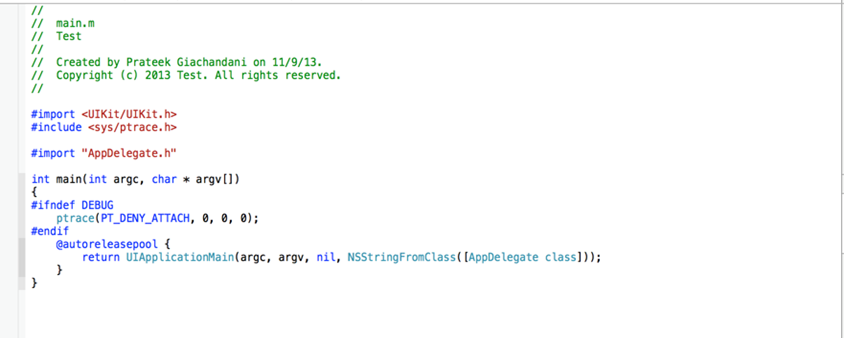
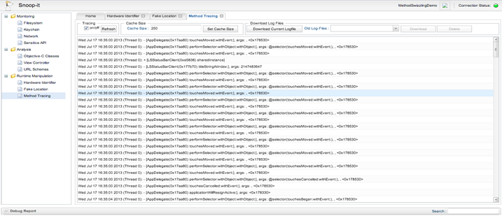
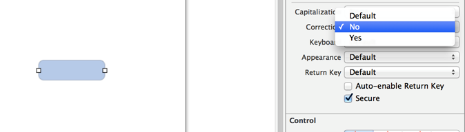

In this article, we will look at some of the best practices an IOS developer should follow in order to make sure that their application is not easily exploitable by hackers.
Local Data Storage
It is extremely important for developers to know what kind of data they should be storing locally in their application. Frankly speaking, no data is secure when stored locally in the application. In part 20 of this series, we have looked at Local Data Storage in great detail.
Important data like Passwords, Session ID’s etc should never be stored locally on the device. If there is no other option, it should be stored on the keychain. This is because you can be assured that the hacker won’t be able to find out the data in your keychain as long as the user’s device is not jailbroken. Since more than 70% people have upgraded their IOS devices to IOS 7 and since there is no public jailbreak for IOS 7 yet, you can be assured that the hacker won’t be able to get the information stored in your keychain (yet). Some people might say that the process of storing data in the keychain isn’t as simple as saving data in NSUserDefaults. But we can always use third-party wrappers that can make the job extremely simple for us. For e.g, here is an article that demonstrates the use of a wrapper named PDKeychainBindings and show how simple it is to save data in the keychain. Here is a snippet of code for saving data in the keychain using this wrapper.
PDKeychainBindings *bindings = [PDKeychainBindings sharedKeychainBindings];
[[[Model sharedModel] currentUser] setAuthToken:[bindings objectForKey:@”authToken”]];
However, please note that on a jailbroken device, keychain information is not secure. It is also advisable to use your own encryption methods to encrypt the string that needs to be protected and then save on the keychain. This adds an extra layer of security because even though the attacker can get the encrypted string from the keychain, he will still have to decrypt this encrypted string.
- NSUserDefaults should never be used to store confidential information like passwords, authentication tokens etc. This is because all the information saved by NSUserDefaults is present in an unencrypted format in a plist file that can be found in the location Library -> Preferences -> $AppBundleId.plist inside your application bundle. Any one can use a tool iExplorer to get a peek inside the application bundle and get the plist file even if the device is not jailbroken.
- Plist files should also be never used to store confidential information like passwords etc because they can also be fetched very easily from inside the application bundle even on a non-jailbroken device. All the content inside a plist file is stored in unencrypted format.
- Core Data files are also stored as unencrypted database files in your application bundle.The Core Data framework internally uses Sql queries to store its data and hence all the files are stored as .db files. One can easily copy these files to their computer and use a tool like sqlite3 to examine all the content in these database files.
Transport Layer Security
- Do not allow self signed certificates to be used when releasing the application. Most developers allows self signed certificates in debug mode but the same shouldn’t be done when releasing the application.
- Do not use a parameter unique to the device (MAC address, IP, UDID) to determine things like the Session ID, authentication token etc.
- Important decisions like Authentication and Authorization should be taken on the backend. Remember that a hacker has the ability to manipulate the runtime of your application.
- Proper input validation should occur both on the client side as well as the server side. A malicious hacker can always modify the request using Burpsuite. It is important to validate the parameters being sent to the backend to avoid any kind of injection attacks.
Use Encryption
Encrypt important files before saving them locally. Again, you don’t have to be an Cryptography guru to encrypt those files. There are a lot of third party libraries that can get the job done for you. I have written an article on Encrypting images and saving them in App Sandbox that uses the RNCryptor library available on Github. The same technique can be used to encrypt any kind of file. Here is a snippet that shows how easy it is to encrypt a file.
UIImage *imageToEncrypt = [UIImage imageNamed:@”SomeImage”]; NSString *imagePath = [NSHomeDirectory() stringByAppendingPathComponent:@”Documents/encryptedImage.png”]; NSData *data = UIImagePNGRepresentation(fetchedImage); NSError *error; NSData *encryptedData = [RNEncryptor encryptData:data withSettings:kRNCryptorAES256Settings password:@”ABC123″ error:&error]; [encryptedData writeToFile:imagePath atomically:YES];
To encrypt SQlite files, you should also consider using SQLCipher.
Add checks to prevent Runtime Analysis
Remember that with a copy of your application binary, a hacker is in complete control. It is therefore important to make his job as difficult as possible. One of the ways to do that is to block debuggers to attach to the application. We have already learnt how to do that in Part 23
of this series. Your main.m file should look something like this… 
This will block debuggers from attaching to this application. We have already learnt how we were able to trace calls using Snoop-it. Here is a screenshot from the same article.

With the line of code added above in main.m file, we wouldn’t be able to do this now. This is because Snoop-it traces calls by attaching a debugger to the application when it starts, and now with the above check, it won’t be able to do that and the application will crash. Please note that this will not prevent the application from tools like Cycript because they do not trace the application.
Some other minor things
TextFields that have inputs as passwords should be used with Secure option. This is because IOS usually caches all the things that you enter in textfields, provided it doesn’t have the Secure tag. Also disable AutoCorrection for those text fields. In the image below, you can see that the textfield has AutoCorrection set to NO and the Secure tag is being enabled.

Clear the Pasteboard once the application enters background. You can do this by adding the following line in the method – (void)applicationDidEnterBackground:(UIApplication *)application in AppDelegate. Ify you are using a custom Pasteboard, replace [UIPasteboard generalPasteboard] with your custom pasteboard.
– (void)applicationDidEnterBackground:(UIApplication *)application
{
// Use this method to release shared resources, save user data, invalidate timers, and store enough application state information to restore your application to its current state in case it is terminated later.
// If your application supports background execution, this method is called instead of applicationWillTerminate: when the user quits.
[UIPasteboard generalPasteboard].items = nil;
}
- Add a prompt or validate input before doing anything critical using URL schemes. We know that any application can register for a URL scheme. For e.g, the Skype app can register for the URL scheme skype:// and any application can call this url with a particular parameter. This allows for a little bit of communication between applications. Previously, there was a vulnerability in Skype where any user can make a call to anyone by using the following url.
skype://123123123?call
Since the skype app didn’t prompt the user before making the call, the calls were directly sent. It would have been better to prompt the user befor actually making the call. The input to the URL scheme should also be validated. You can add validation in the method – (BOOL)application:(UIApplication *)application handleOpenURL:(NSURL *)url in AppDelegate
– (BOOL)application:(UIApplication *)application handleOpenURL:(NSURL *)url {
//Validate input from the url
return YES;
}
- Some applications use UIWebViews that can be used to display content from a URL. There have been vulnerabilities discovered previously in UIWebviews in popular applications.UIWebviews also support javascript and currently there is no public API available to disable javascript in a UIWebview. Therefore if any user controlled input is used to populate content in a UIWebview, it can be manipulated during runtime to execute javascript code on the UIWebview. Even if the input is not user controlled, the attacker can manipulate the content being added to the UIWebview druring runtime and hence execute any javascript code he wants. Since there is not much a developer can do about it due to the restrictions imposed by Apple, a developer should make sure that the content he loads into the UIWebview is not malicious by a) Making sure the data is loaded over HTTPs b) Making sure the content in the UIWebview does not depend on user input and c) validate the contents of the URL by using the function dataWithContentsOfURL present in the NSData class.